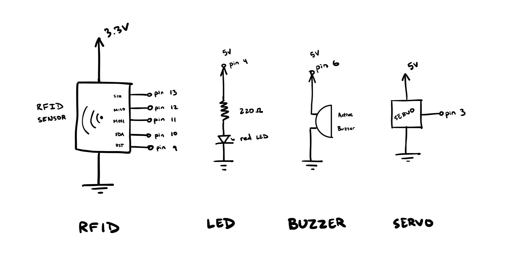
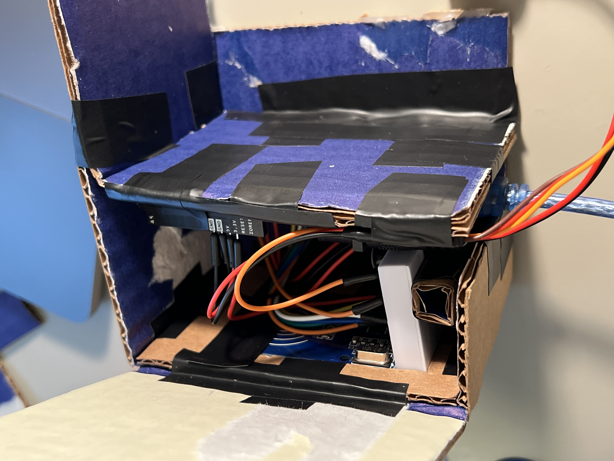

Final: RFID Cat Door Lock
Mar 8, 2024Project Concept & Motivation
I have two cats at home, Moe and Saya. They frequently go outside, and they come and go using a cat door in our garage. Unfortunately, there is no lock on the door, meaning animals such as the other cats, mice, or even racoons can come into through the door to steal food. For my final project, I wanted to build a cat door lock that is unlocked by an RFID tag that I would place on my cats' collars.

I planned on placing the sensor outside the door, connected to a servo motor on the inside that would control a bar blocking the swinging door. When the correct RFID tag was brought to the sensor, it would beep and flash a light, lifting the bar and allowing the door to push through. I planned the LED and beep for visual and audio feedback, allowing me to use the stimuli to train my cats to enter through the door. While I planned to use a higher strength material for the bar in future iterations, I built my final project prototype out of cardboard due to time contraints.
Materials
- Arduino + jumper wires
- MFRC522 RFID tag + reader
- Servo motor
- Active buzzer
- Red LED
- 9V Battery
- Cardboard
Technical Implementation
There were four aspects of my circuit: the RFID sensor, LED, buzzer, and servo motor. Following the MFRC522 library documentation, I connected the sensor to my arduino. Unlike previous components in this course, the sensor was connected to 3.3V.
The LED circuit was fairly straightforward and resembled that from work on previous assignments. Using Ohm's Law, the ideal resistor would be 160Ω to maintain a current of 20mA. I used the next highest reisstor at 220Ω.
The buzzer was similar to the LED, only without the resistor. Setting the output pin as HIGH resulted in the beeping sound from the buzzer.
The servo motor was connected to 5V pin and was controlled by the PWM pin on the arduino. I used the Servo library to access and write to the Servo.
Building

I started by building an open version of my circuit without the servo motor. This allowed me to complete the portion of recognizing the correct RFID tag.
I then fit the circuitry inside a cardboard enclosure which would allow me to neatly use my product. I cut and joined cardboard, leaving an opening at the bottom for power and the servo wire.

Lastly, I connected the servo motor to the circuit and ensured that the RFID sensor could read the tag through the cardboard. I had to switch the original piece of cardboard to a thinner one that allowed for higher sensitivity, but I was able to get the prototype to function.
Code
After adjusting my firmware to fit the working circuit, the following code was used in my final product:
// This code was built upon examples described by Enjoy Mechatronics in
// https://www.youtube.com/watch?v=aIO6KdzITzU
#include <SPI.h> // Allows communication with serial peripheral interface (SPI)
#include <MFRC522.h> // RFID library
#include <Servo.h> // Servo library
Servo myServo; // Creates servo object
#define RST_PIN 9 // Sets RST pin for RFID sensor
#define SS_PIN 10 // Sets SS pin for RFID sensor
MFRC522 mfrc522(SS_PIN, RST_PIN); // Creates MFRC522 object
byte accessUID[4] = {0xD3, 0x90, 0x0F, 0x0C}; // Sets ID of RFID tag
int servo = 3; // Sets servo motor pin to 3
int LED = 4; // Sets LED pin to 4
int buzzer = 6; // Sets buzzer pin to 6
// Runs initially at startup
void setup() {
Serial.begin(9600); // Initializes serial at 9600 baud
while (!Serial); // Wait until serial opens
SPI.begin(); // Initializes SPI bus
mfrc522.PCD_Init(); // Initializes MFRC522 sensor
delay(4); // Short delay of 4 ms
mfrc522.PCD_DumpVersionToSerial(); // Show details of PCD - MFRC522 Card Reader details
Serial.println(F("Ready to Scan!")); // Prints start message
pinMode(LED, OUTPUT); // Sets LED pin to be output
pinMode(buzzer, OUTPUT); // Sets buzzer pin to be output
myServo.attach(servo); // Attaches servo motor
myServo.write(0); // Sets initial servo position to 0˚
delay(15); // Delay to allow servo to move
}
// Loops after completion of setup loop
void loop() {
if ( ! mfrc522.PICC_IsNewCardPresent()) { // Exits loop if no new card is read
return; // Exits loop
}
if ( ! mfrc522.PICC_ReadCardSerial()) { // Exits loop if no card is read
return; // Exits loop
}
// Runs if all four indices of read tag matches set unique ID
if (mfrc522.uid.uidByte[0] == accessUID[0] && mfrc522.uid.uidByte[1] == accessUID[1] &&
mfrc522.uid.uidByte[2] == accessUID[2] && mfrc522.uid.uidByte[3] == accessUID[3]) {
Serial.println("Access Granted"); // Reports to serial log for debugging
digitalWrite(LED, HIGH); // Turns on LED
digitalWrite(buzzer, HIGH); // Turns on buzzer
delay(300); // Wait 300 ms
digitalWrite(LED, LOW); // Turns off LED
digitalWrite(buzzer, LOW); // Turns off buzzer
myServo.write(90); // Rotates servo to 90˚ (open lock)
delay(5000); // Wait 5 s
myServo.write(0); // Rotate servo back to 0 (close lock)
delay(15); // Wait 15 ms
} else { // If tag does not match set UID
Serial.println("Access Denied"); // Reports to serial log for debugging
}
}